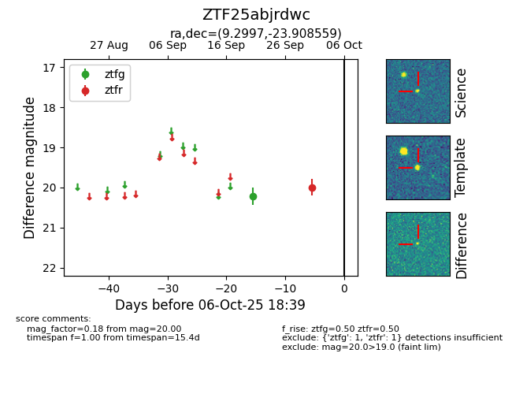

FINK: ZTF25abjrdwc
Lasair: ZTF25abjrdwc
ALeRCE: ZTF25abjrdwc
ZTF25abjrdwc (ztf,fink)
equatorial (ra, dec) = (9.2997,-23.90856)
galactic (l, b) = (77.2155,-85.45231)

last ztfg=20.22, ztfr=20.00
1 ztfg, 1 ztfr detections